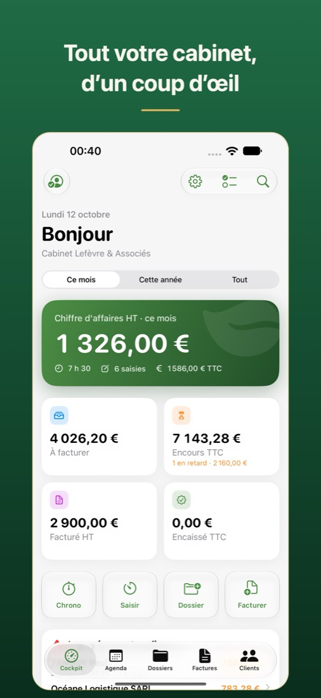
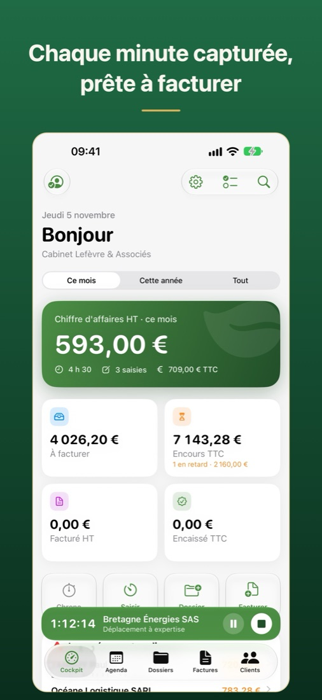
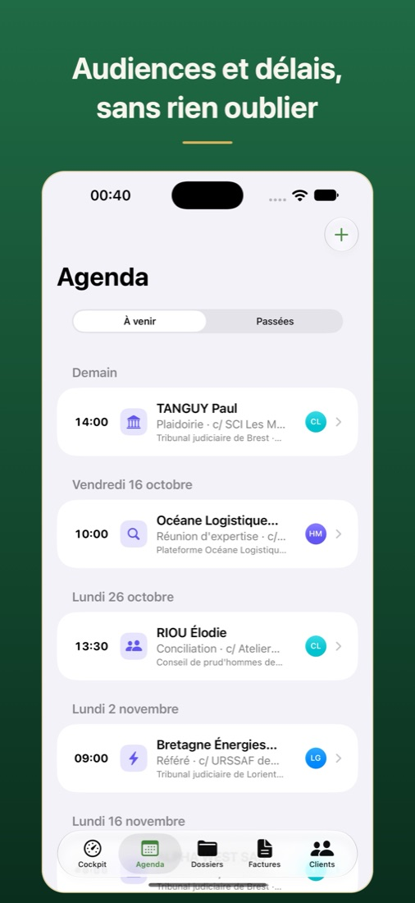
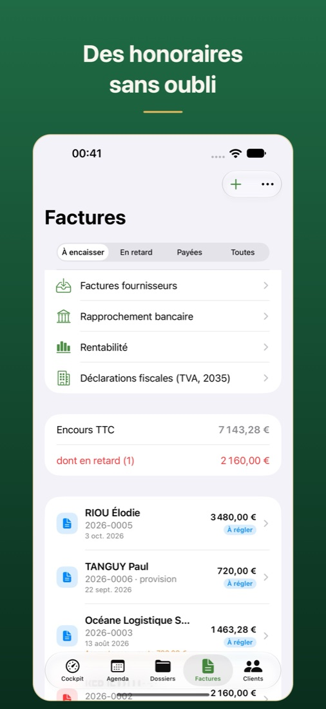

Du premier rendez-vous à l'encaissement : dossiers, temps, audiences, délais et factures dans une app née dans un vrai cabinet, qui grandit avec le vôtre — de l'avocat seul au cabinet de trente. Sans serveur chez nous : vos données restent dans votre iCloud, chiffrées de bout en bout.
Solavo reconstruit — en mieux — l'outil qu'un cabinet s'était taillé sur mesure pendant des années. Chaque écran correspond à un geste réel de la journée d'un avocat, sans formation ni consultant.
Solavo est conçue exclusivement pour Mac, iPhone, iPad et Apple Watch : lancement instantané, travail hors ligne au tribunal, synchronisation continue entre vos appareils par iCloud.
Au premier lancement, Solavo s'ouvre sur un cabinet d'exemple complet : clients, dossiers, temps, factures, relances et audiences. Promenez-vous, puis créez votre cabinet quand vous êtes prêt.




Un logiciel de cabinet classique range vos dossiers sur ses serveurs. Solavo n'en a pas : vos données vivent dans votre iCloud, chiffrées de bout en bout, et chaque document est chiffré sur votre appareil avant tout envoi. Lisibles par votre cabinet, et par personne d'autre — ni Apple, ni nous.
Un cabinet à Lyon, Liège, Luxembourg ou Lausanne ne pratique pas le même droit. Solavo non plus : la facturation, la comptabilité et les délais de procédure suivent le pays du cabinet.
De l'avocat seul au cabinet de trente. Un associé s'abonne, enregistre la licence du cabinet — et toute l'équipe en bénéficie, chacun voyant ce que son rôle permet.
Solavo est un logiciel de gestion de cabinet d'avocat pour iPhone, iPad, Mac et Apple Watch. Il réunit le temps passé, la facturation et les relances, les audiences et les délais de procédure, les dossiers et les clients. Il convient à l'avocat seul comme au cabinet de trente utilisateurs, en France, en Belgique, au Luxembourg et en Suisse.
29 € TTC par mois pour un avocat, puis 24 € par mois par utilisateur ajouté, jusqu'à 30 utilisateurs (exemple : 77 € par mois pour 3 utilisateurs). L'abonnement annuel offre deux mois, jusqu'à 5 utilisateurs. L'abonnement passe par l'App Store, après 14 jours d'essai gratuit et sans engagement.
Non. Solavo est une app native conçue exclusivement pour Mac, iPhone, iPad et Apple Watch. L'espace client en ligne, destiné à vos clients, s'ouvre en revanche dans n'importe quel navigateur.
Dans le compte iCloud du cabinet, chiffrées de bout en bout. Solavo n'a pas de serveur : ni Apple ni l'éditeur ne peuvent lire vos dossiers, ce qui préserve le secret professionnel. Une archive complète, lisible sans Solavo, peut être exportée à tout moment.
Oui : factures Factur-X en France avec un export mensuel pour votre plateforme agréée, factures Peppol en Belgique et QR-facture en Suisse. Solavo calcule aussi les relances, les pénalités et les intérêts légaux.
Oui, selon le pays du cabinet : Code de procédure civile en France (délais d'appel, conclusions des articles 908 et 909, prescription), Code judiciaire en Belgique, NCPC au Luxembourg et CPC suisse avec les féries judiciaires. Les rappels tombent à J-7, J-2 et le jour même.
Oui. Solavo fonctionne hors ligne par défaut et synchronise vos appareils par iCloud dès que le réseau revient.
Solavo est disponible sur l'App Store pour iPhone, iPad, Mac et Apple Watch, en France, en Belgique, au Luxembourg et en Suisse. 14 jours d'essai gratuit.
Télécharger dans l'App Store